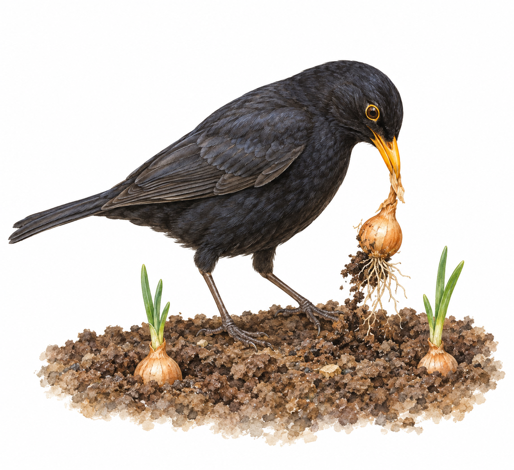
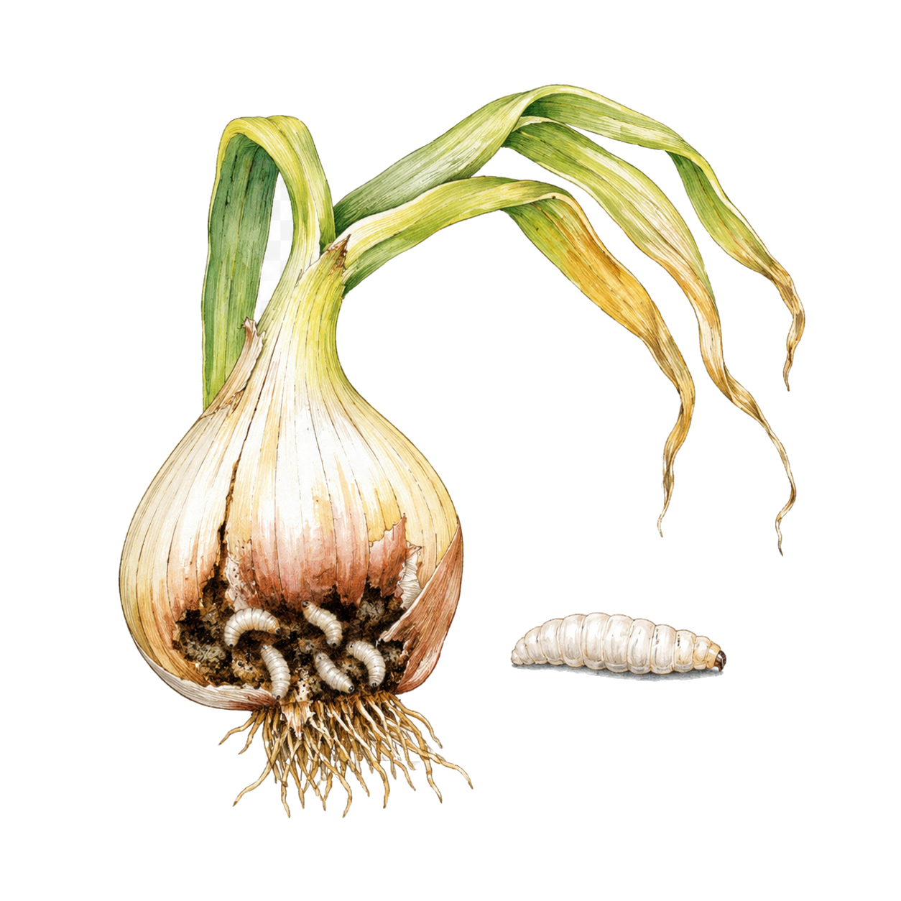

Onions and Shallots
Birds Pulling Sets
Newly planted onion sets are pulled out of the soil just as they begin to grow.
recognise
Newly planted onion sets are pulled out before they establish. Birds may investigate their exposed dry tips.
act
Replant sound lifted sets promptly before their roots dry out.
prevent
Firm sets at normal depth and guard with secure netting until rooted. Check for trapped wildlife.

Onions and Shallots
Onion Fly
Tunnelled bulbs with 1/4 in. white maggots.
recognise
Yellow, drooping leaves accompany maggots feeding at bulb bases. Seedlings may die; older plants fail to develop.
act
Remove badly affected plants and infested bulbs.
prevent
Use insect-proof mesh with rotation. Clear crop debris; sets are less vulnerable than seedlings.